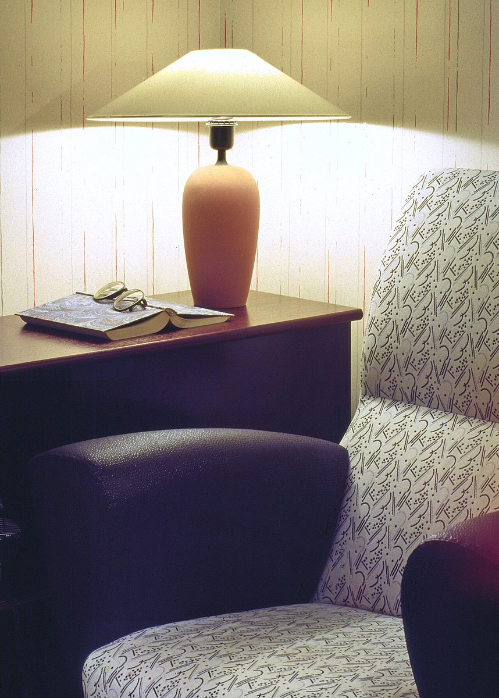

二ノ石
店のこと
お店について確認できているのは、所在地とInstagramのアカウントだけです。
このページの「想像してみる」部分は、制作側が想像して書いたものです。お店の実際の様子・考え・メニューとは関係がありません。
確認できていること
- 店名は「そろっと」、業種はカフェ
- 所在地は山口県岩国市麻里布町3丁目1-6(〒740-0018)
- 電話番号はなし。連絡はInstagramから
- 営業時間・定休日・メニュー・価格・ご予約・駐車場は準備中

想像してみる
「そろっと」という名前から
由来は分かりません。制作側は、声をひそめて入りたくなるような、静かな店かもしれないと想像しました。たとえばひとりでふらりと立ち寄って、足もとを気にせずゆっくり腰をおろす。そんな時間を思い浮かべています(実際のお店の姿ではありません)。制作側の連想です。お店の理念・由来とは無関係です。


町のこと
岩国市について
岩国市は山口県の東端にあり、錦帯橋で知られる城下町です。ただし、お店が橋や観光とどう関わるのかは分かりません。